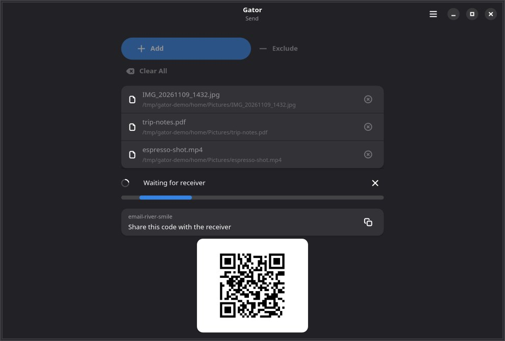
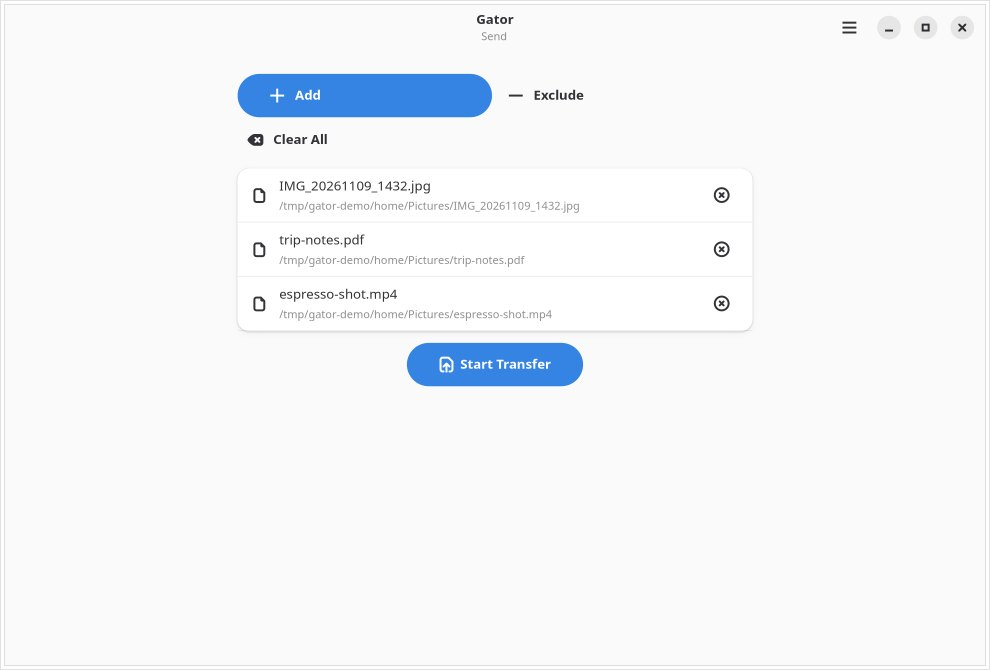
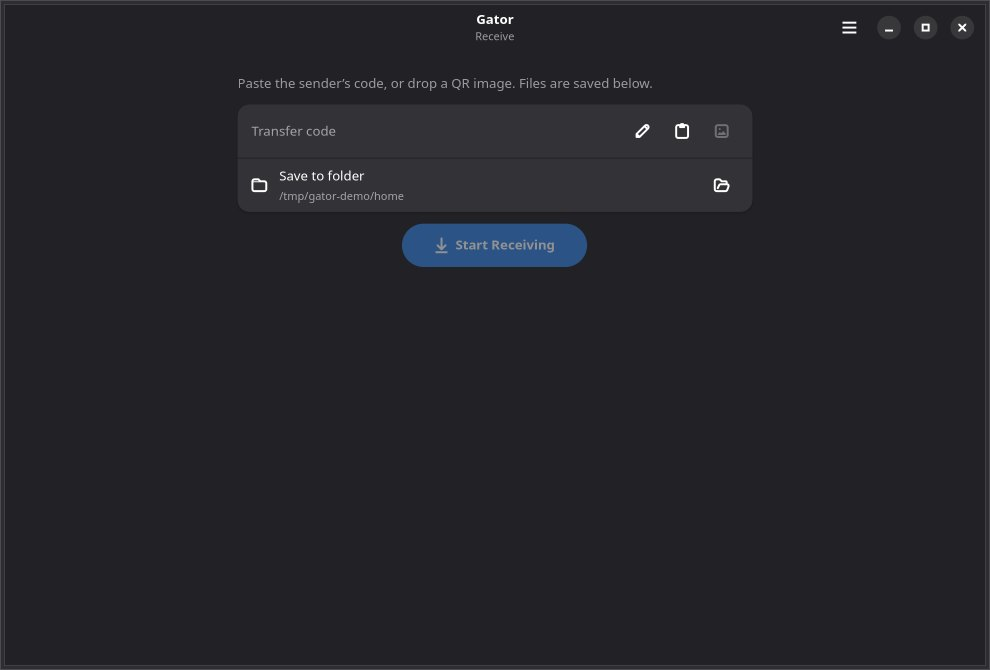

GTK4 / Libadwaita · Linux
A GTK front end for croc: send files, folders, and text with end-to-end encryption, a share code, and a QR code. Built for Linux desktop and Linux phones.
Personal, experimental software. Nothing here is a finished product, and nothing was necessarily written or reviewed by a human unless it says so. Use it at your own risk.



Current app version in the tree: 1.6.3. Flatpak currently bundles croc 11.6.5 — no separate croc install is needed. Builds are published for x86_64 and aarch64.
The easiest install is the .flatpakref on master:
flatpak remote-add --user --if-not-exists flathub \
https://dl.flathub.org/repo/flathub.flatpakrepo
flatpak install --user --from \
https://raw.githubusercontent.com/isyourbrainfoss/gator/master/org.gator.Gator.flatpakref
flatpak run org.gator.GatorOr add the Pages remote:
flatpak remote-add --user --if-not-exists --no-gpg-verify --from gator \
https://isyourbrainfoss.github.io/gator/gator.flatpakrepo
flatpak install --user gator org.gator.GatorNeeds croc on PATH, plus Python 3.10+, PyGObject, GTK 4, and libadwaita 1.7+.
git clone https://github.com/isyourbrainfoss/gator.git
cd gator
pip install -e '.[qr,dev]'
gatorAndroid users want the Flutter port: gator-flutter.